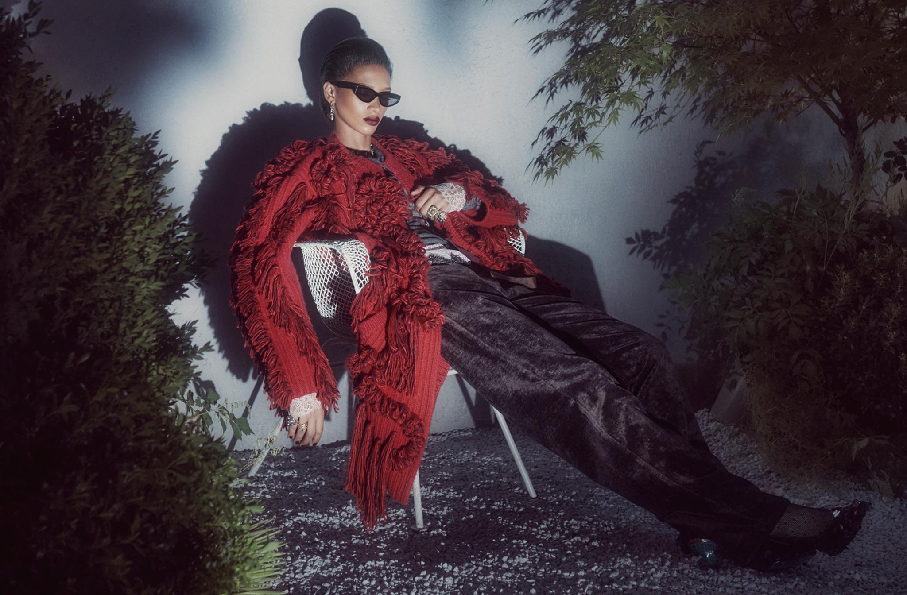

红色外搭的花形装饰与流苏显得隆重，人物却向后倚靠，双腿舒展，戴着太阳镜的面部没有明显笑意。这张照片把丰富的服饰细节与克制的人物状态放在一起，使一套穿搭形成了鲜明的形象。
照片来自 ZARA Studio 2026 秋冬女士系列 Twilight Roses，由 Steven Meisel 摄影、Karl Templer 负责造型，Baron & Baron 负责创意指导。官方介绍强调，将蕾丝、流苏等装饰元素与针织、衬衫和长裤结合，混合日常穿着与晚装。¹ 以下关于气质、构图及品牌关系的解释，属于本文的视觉分析。

ZARA Studio 2026 秋冬女士系列，横幅版本。摄影：Steven Meisel；造型：Karl Templer。系列资料与制作署名见参考资料 1。
隆重的衣服，进入舒展的姿态
红色外搭首先建立了视觉分量。花形装饰、流苏与较大的衣物体积集中在上半身，袖口和戒指继续补充细节。如果只描述服装，很容易将它理解为需要端正姿态相配的盛装。
照片选择了另一种身体安排：模特向后倚靠，一只手停在胸前，另一只手沿椅侧垂下；双腿伸向画面右下方。身体的重心有椅子支撑，肢体也没有紧紧收拢，穿着因此显得从容。
这种从容经过了具体组织。胸前的手将戒指和袖口留在容易看见的位置，另一条手臂带着衣袖下垂，使流苏展开。长裤沿伸出的双腿形成较完整的深色形状，与上半身繁密的装饰分工。姿态既塑造人物，也展示服装。
日常与晚装的混合，由此成为可见的关系：具有隆重感的服饰进入了近似休息的坐姿，深色长裤则与装饰丰富的外搭组合。官方提出的系列方向，在身体、材质与搭配中获得了具体表现。
身体放松，人物仍保留距离
舒展的坐姿没有使画面变得热情。太阳镜遮挡眼神，嘴唇闭合，头部也没有完全转向镜头。观众能辨认她的身体状态，却难以直接读懂情绪。
向后梳起的头发露出面部和颈部，窄框太阳镜、深色唇妆与尖头鞋共同形成复古的造型倾向。这里无需把人物解释为高傲、冷漠或自信；这些是可能的观看感受，不能据此判断模特的真实心理。
人物的收敛也为服装留下了注意空间。红色外搭已经提供较强的色彩与纹理，如果面部、动作和环境同时追求强烈表达，观看重点就可能分散。照片让身体充分展开，同时减少直接招呼观众的表情，使脸部、饰品与衣物保持联系。
此前讨论 ZARA 的品牌气质时，我们注意到它的一些形象画面讲究完整造型，并保留人物的距离感。这张照片延续了这种表达：观众看到一个已经安排妥当的人物形象，但她的经历和情绪没有被说明。
硬光让影子成为人物的一部分
人物身后的投影轮廓较清楚，头部和外搭的外形被再次画在墙上。红色衣物的体积没有只停留在真实轮廓中，影子又向周围扩展了一层，使人物占据更大的视觉范围。
这也是画面偏暗却不平淡的原因。光线让花形装饰与流苏产生细碎明暗，长裤保留折痕与表面光泽，饰品形成小面积亮点。人物、衣物与墙面之间，存在清楚的亮暗关系。
从投影边缘可以判断，具有硬光特征的照明参与了画面。颜色偏暗、色调克制，与光线柔软是不同的事。若把墙上的暗影大幅提亮，服装仍然存在，但人物周围这层鲜明轮廓就会减弱，空间与情境也会随之变化。
画面还让清楚的人物投影与部分较模糊的植物影子共存，产生不同的距离线索。不过，仅凭成片无法还原灯具、光源数量或后期比例；可以分析可见效果，不宜将猜测的布光方案写成拍摄事实。
红色突出，是因为周围颜色有所退让
红色外搭是画面中最集中的鲜明色块。植物以暗绿为主，墙面偏冷灰，长裤和鞋保持深色，使红色有了清楚的位置。它与背景之间既有色相差异，也有明暗和细节密度的差别。
深红色与流苏、花形装饰结合，在低亮度环境中显出厚重感。将这些关系简单概括为“红色代表力量”，会遗漏真正起作用的部分：同样的红色，放进明亮背景、轻薄材质和活泼表情中，观看感受可能完全不同。
这张照片的注意力也并非平均分布。面部和上半身拥有较多可辨认的细节，深色长裤则以连续形状向右下方延伸。观众容易先关注红色衣物与脸部，再沿身体看向鞋子。繁与简共同维持了全身造型的完整。
庭院环境与取景，怎样改变观看重点
白色金属网椅、碎石地面、墙面与枝叶，为服装提供了具体的放置环境。椅架较细，红色外搭体积较大，两者形成对照；一把并不厚重的椅子，也足以支撑画面中较有分量的造型。
两侧植物构成前景，人物位于中间，墙面在后方承接影子。层次使画面具有空间感，而没有明确地点标识的墙面又减少了叙事信息。观众能感到一个庭院般的环境，却无法确定人物正在参加什么活动。
这里所说的情境感，来自人物仿佛处于某件事发生前后的状态。照片给出环境和姿态，保留了情节。这种不完全说明，使观看者可以继续想象人物与服装的关系。
本文使用的横幅版本，与官方发布资料中的方幅呈现有所不同。方幅在人物上方保留更多墙面与植物影子；横幅减少了上方空间，使人物和衣物占比更大，伸出的双腿形成更突出的斜线。同一画面因此可以有不同重点：更多环境留白，或更集中的人物造型。这个比较说明裁切的视觉作用，不代表已经知道两种版本的制作过程。
它怎样为大众成衣建立时装感
ZARA 官方品牌介绍强调，向广泛人群提供趋势与灵感。² 在这一方向下，系列形象可以通过服装组合、人物造型与摄影建立审美取向，消费者再从中选择具体单品。
这张照片提供的取向很清楚：装饰丰富，身体舒展，人物讲究而保持距离。红色外搭、长裤、饰品、发型、表情和投影共同形成完整形象。只改变其中一部分，例如换成较拘谨的正坐姿态，或移除太阳镜，人物与衣服的关系就会发生变化。
这种效果不要求画面极简。衣物本身可以繁复，关键在于每个部分是否共同指向一种明确表达。也不能用一张 Studio 广告概括 ZARA 的全部风格；这里呈现的是这一系列的一种形象选择。
它同时保留了宣传画面的取舍：红色外搭与整体人物容易被记住，部分内搭结构、深色服装细节却被遮挡或压暗。作为系列形象，它具有表现力；判断单件商品的面料、剪裁与穿着效果，仍需要其他角度的图片。摄影在这里完成的，是让具体服饰进入一种能够被记住的穿着状态。
参考资料
- ITX Japan，ZARA Studio 2026 秋冬系列官方发布资料，2026 年 10 月 23 日：系列介绍、制作署名与官方图片。资料核对截至 2026 年 10 月 30 日。
- Inditex People，ZARA 官方品牌介绍。官方品牌方向与本文对照片的视觉解读分别处理。